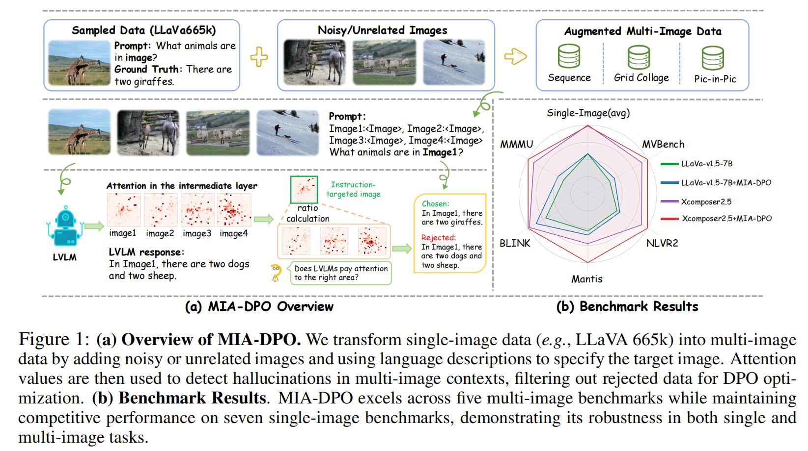

<!DOCTYPE html>
<html>

<head>
  <meta charset="utf-8">
  <meta name="description" content="MIA-DPO">
  <meta name="keywords" content="multimodal chatbot">
  <meta name="viewport" content="width=device-width, initial-scale=1">
  <title>MIA-DPO</title>

  <link rel="stylesheet" href="https://fonts.googleapis.com/css?family=Google+Sans|Noto+Sans|Castoro">
  <link rel="stylesheet" href="https://cdn.jsdelivr.net/npm/bulma@0.9.1/css/bulma.min.css">
  <link rel="stylesheet" href="https://maxcdn.bootstrapcdn.com/bootstrap/4.5.2/css/bootstrap.min.css">
  <link rel="stylesheet" href="https://cdn.jsdelivr.net/gh/jpswalsh/academicons@1/css/academicons.min.css">
  <link rel="stylesheet" href="https://cdnjs.cloudflare.com/ajax/libs/font-awesome/5.15.1/css/all.min.css">
  <link rel="stylesheet" href="./static/css/index.css">
  <link rel="icon" href="static/images/logo.png">
  <link href="https://fonts.googleapis.com/icon?family=Material+Icons" rel="stylesheet">


  <script src="https://ajax.googleapis.com/ajax/libs/jquery/3.5.1/jquery.min.js"></script>
  <script defer src="https://cdnjs.cloudflare.com/ajax/libs/font-awesome/5.15.1/js/all.min.js"></script>
  <script type="module" src="https://gradio.s3-us-west-2.amazonaws.com/3.27.0/gradio.js"></script>
</head>


<style>
    .section {
    margin-bottom: -30px; /* Adjust this value as needed to reduce the space */
  }
  .expandable-card .card-text-container {
    max-height: 200px;
    overflow-y: hidden;
    position: relative;
  }

  .expandable-card.expanded .card-text-container {
    max-height: none;
  }

  .expand-btn {
    position: relative;
    display: none;
    background-color: rgba(255, 255, 255, 0.8);
    /* margin-top: -20px; */
    /* justify-content: center; */
    color: #510c75;
    border-color: transparent;
  }

  .expand-btn:hover {
    background-color: rgba(200, 200, 200, 0.8);
    text-decoration: none;
    border-color: transparent;
    color: #510c75;
  }

  .expand-btn:focus {
    outline: none;
    text-decoration: none;
  }

  .expandable-card:not(.expanded) .card-text-container:after {
    content: "";
    position: absolute;
    bottom: 0;
    left: 0;
    width: 100%;
    height: 90px;
    background: linear-gradient(rgba(255, 255, 255, 0.2), rgba(255, 255, 255, 1));
  }

  .expandable-card:not(.expanded) .expand-btn {
    margin-top: -40px;
  }

  .card-body {
    padding-bottom: 5px;
  }

  .vertical-flex-layout {
    justify-content: center;
    align-items: center;
    height: 100%;
    display: flex;
    flex-direction: column;
    gap: 5px;
  }

  .figure-img {
    max-width: 100%;
    height: auto;
  }

  .adjustable-font-size {
    font-size: calc(0.5rem + 2vw);
  }

  .chat-history {
    flex-grow: 1;
    overflow-y: auto;
    /* overflow-x: hidden; */
    padding: 5px;
    border-bottom: 1px solid #ccc;
    margin-bottom: 10px;
  }

  #gradio pre {
    background-color: transparent;
  }
  
	/* 使用渐变颜色实现彩虹字体 */
	.rainbow-text {
	  background: linear-gradient(to right, #3498db, #2ecc71);
	  -webkit-background-clip: text;
	  color: transparent;
	  display: inline-block;
	  font-weight: bold;
	}
  
</style>

<body>

<section class="hero">
  <div class="hero-body">
    <div class="container is-max-desktop">
      <div class="columns is-centered">
        <div class="column has-text-centered">
          <h1 class="title is-1 publication-title"> <span class="rainbow-text">MIA-DPO</span>: Multi-Image Augmented Direct Preference Optimization For Large Vision-Language Models</h1>
          <div class="is-size-5 publication-authors">
              <span class="author-block"> <a href="https://github.com/Liuziyu77">Ziyu Liu</a><sup>1,2</sup>,</span>
              <span class="author-block"> <a href="https://yuhangzang.github.io/">Yuhang Zang</a><sup>&dagger;2</sup>, </span>
              <span class="author-block"> <a href="https://lightdxy.github.io/">Xiaoyi Dong</a><sup>2</sup>, </span>
              <span class="author-block"> <a href="https://panzhang0212.github.io/">Pan Zhang</a><sup>2</sup>, </span>
	      <span class="author-block"> <a href="https://scholar.google.com/citations?user=sJkqsqkAAAAJ">Yuhang Cao</a><sup>2</sup>, </span>
              <br>
	      <span class="author-block"> <a href="https://kennymckormick.github.io/">Haodong Duan</a><sup>2</sup>, </span>
	      <span class="author-block"> <a href="https://conghui.github.io/">Conghui He</a><sup>2</sup>, </span>
              <span class="author-block"> <a href="http://yjxiong.me/">Yuanjun Xiong</a><sup>4</sup>, </span>
              <span class="author-block"> <a href="http://dahua.site/">Dahua Lin</a><sup>2,3</sup>, </span>
              <span class="author-block"> <a href="https://myownskyw7.github.io/">Jiaqi Wang</a><sup>&dagger;2</sup> </span>
            </div>

          <div class="is-size-5 publication-authors">
              <span class="author-block"><sup>1</sup>Shanghai Jiao Tong University,</span>
              <span class="author-block"><sup>2</sup>Shanghai AI Laboratory,</span>
              <span class="author-block"><sup>3</sup>The Chinese University of Hong Kong,</span>
              <span class="author-block"><sup>4</sup>MThreads, Inc.,</span>
          </div>
		  <div class="is-size-6 publication-authors">
              <span class="author-block"><sup>&dagger;</sup>Corresponding authors.</span>
            </div>
          <div class="column has-text-centered">
            <div class="publication-links">
              <!-- PDF Link. -->
              <span class="link-block"> <a href="https://github.com/Liuziyu77/MIA-DPO/tree/main"
                   class="external-link button is-normal is-rounded is-dark"> <span class="icon"> <i class="ai ai-arxiv"></i> </span> <span>arXiv</span> </a> </span>
              <!-- Code Link. -->
              <span class="link-block"> <a href="https://github.com/Liuziyu77/MIA-DPO/tree/main"
                   class="external-link button is-normal is-rounded is-dark"> <span class="icon"> <i class="fab fa-github"></i> </span> <span>Code</span> </a> </span>
<!--               <!-- HuggingFace Link. -->
              <span class="link-block"> <a href="https://huggingface.co/datasets/laolao77/MMDU"
                   class="external-link button is-normal is-rounded is-dark"><span class="icon">🤗</span><span>Space</span> </a></span> -->
              <!-- Dataset Link. -->
             <!--  <span class="link-block"> <a href="https://huggingface.co/spaces/Zery/Alpha-CLIP_LLaVA-1.5" -->
             <!--       class="external-link button is-normal is-rounded is-dark"> <span class="icon"> <i class="far fa-images"></i> </span> <span>Alpha-CLIP+LLM Demo</span></a></span> -->
	      <!-- Dataset Link. -->
            <!--   <span class="link-block"> <a href="https://huggingface.co/spaces/Zery/Alpha_CLIP_ImgVar" -->
              <!--      class="external-link button is-normal is-rounded is-dark"> <span class="icon"> <i class="far fa-images"></i> </span> <span>Alpha-CLIP+ImgVar Demo</span></a></span></div> -->
          	 </div>
       	   </div>
        </div>
  </div>

<section class="section">
  <div class="container is-max-desktop">
    <!-- Abstract. -->
    <div class="columns is-centered has-text-centered">
      <div class="column is-six-fifths">
	<div style="text-align: center;">
		
	  </div><br>
	 
        <h2 class="title is-3">Abstract</h2>
        <div class="content has-text-justified">
		  <style>
			/* 使用渐变颜色实现彩虹字体 */
			.rainbow-text {
			  background: linear-gradient(to right, #3498db, #2ecc71);
			  -webkit-background-clip: text;
			  color: transparent;
			  display: inline-block;
			  font-weight: bold;
			}
		  </style>
          <p>              
	          Visual preference alignment involves training Large Vision-Language Models (LVLMs) to predict human preferences between visual inputs. 
		  This is typically achieved by using labeled datasets of chosen/rejected pairs and employing optimization algorithms like direct preference optimization (DPO). 
		  Existing visual alignment methods, primarily designed for single-image scenarios, struggle to effectively handle the complexity of multi-image tasks due to the scarcity of diverse training data and the high cost of annotating chosen/rejected pairs. 
		  🌈We present <span class="rainbow-text">Multi-Image Augmented Direct Preference Optimization (MIA-DPO)</span>, a visual preference alignment approach that effectively handles multi-image inputs. 
		  MIA-DPO mitigates the scarcity of diverse multi-image training data by extending single-image data with unrelated images arranged in grid collages or pic-in-pic formats, significantly reducing the costs associated with multi-image data annotations. 
		  Our observation reveals that attention values of LVLMs vary considerably across different images. We use attention values to identify and filter out rejected responses the model may have mistakenly focused on. 
		  Our attention-aware selection for constructing the chosen/rejected pairs without relying on (i) human annotation, (ii) extra data, and (iii) external models or APIs. 
		  MIA-DPO is compatible with various architectures and outperforms existing methods on five multi-image benchmarks, achieving an average performance boost of 3.0% on LLaVA-v1.5 and 4.3% on the recent InternLM-XC2.5. 
		  Moreover, MIA-DPO has a minimal effect on the model's ability to understand single images.  
	  </p>
      </div>
    </div>
    <!--/ Abstract. -->

<!--     Paper video. -->
<!--     <div class="columns is-centered has-text-centered">
      <div class="column is-six-fifths">
        <h2 class="title is-3">Video</h2>
        <div class="publication-video">
          <iframe src="https://www.youtube.com/embed/UAUJNFJSbiI?rel=0&amp;showinfo=0"
                  frameborder="0" allow="autoplay; encrypted-media" allowfullscreen></iframe>
        </div>
      </div>
    </div> -->
    <!--/ Paper video. -->
  </div>

<section class="section"  style="background-color:#efeff081" id="Highlight">
      <div class="container is-max-desktop">
        <div class="columns is-centered has-text-centered">
          <div class="column is-six-fifths">
            <h2 class="title is-3">🔥Highlight</h2>
            <div class="content has-text-justified">
              <p style="font-size: 15px;">
                <ul>
                <li><b>Multi-Image Visual Alignment Pipeline:</b> We first design a multi-image visual alignment pipeline MIA-DPO. Our MIA-DPO requires no manual annotations and does not rely on APIs from larger models, offering a significant cost advantage compared to existing visual alignment approaches.</li>
                <li><b>Observation on Multi-Image Hallucinations:</b> We contribute to the study of different types of multi-image hallucinations and propose to use attention values as an indicator for detecting multi-image hallucinations.</li>
                <li><b>Excellent Performance</b> MIA-DPO is agnostic to different LVLM architectures (LLaVA-v1.5 and InternLM-XC2.5, boosts the performance on multiple multi-image benchmarks while maintaining the original single-image understanding capabilities.</li>
		</ul>
              </p>
            </div>
          </div>
        </div>
      </div>
</section><br>

<section class="section" id="Hallucinations">
   <div class="container is-max-desktop">
      <div class="columns is-centered has-text-centered">
        <div class="column is-six-fifths">
          <h2 class="title is-3"> <span class="rainbow-text">MIA-DPO's Observation:</span> Multi-Image Hallucinations</h2>
        </div>
	    </div>
	      <div class="container is-max-desktop">
	        <div class="columns is-centered">
	          <div class="column is-full-width">
	            <div class="content has-text-justified">
	              <p>
                      Some previous studies have explored different types of single-image hallucinations, such as object hallucination which means the model incorrectly describes objects that are not present in the image. Compared to single-image hallucinations, multi-image scenarios introduce more complex types of hallucinations. As shown in Fig. 2, we categorize multi-image hallucinations into two-types:<br>
			(1) <strong>Sequence Confusion.</strong> When presented with multiple images, the model may fail to identify which image the input prompt refers to. For instance, in the top case shown in Fig. 2, the question is directed at Image 3 (birds and sky), but the model responds based on Image 4 (a train on tracks).<br>
			(2) <strong>Element Interference.</strong> The presence of multiple images significantly increases the number of visual elements compared to a single image, leading to confusion between different elements by LVLMs. For example, in the bottom case of Fig. 2, the question “What color is the car in Image2?” should be answered with “white”. However, the LVLM incorrectly interpreted the color attribute of the motorcycle in Image 3 as the color of the car in Image 2, resulting in an incorrect response.<br>
	                    
	                  </div>
                  </p>
            </div>
            </b></font>
          </div>
        </div>
      </div>
    </section>

<section class="section" id="Framework">
   <div class="container is-max-desktop">
      <div class="columns is-centered has-text-centered">
        <div class="column is-six-fifths">
          <h2 class="title is-3"> <span class="rainbow-text">MIA-DPO:</span> Framework</h2>
        </div>
	    </div>
	      <div class="container is-max-desktop">
	        <div class="columns is-centered">
	          <div class="column is-full-width">
	            <div class="content has-text-justified">
	              <p>
                      <strong>Attention as an Indicator for Detecting Hallucinations</strong> The attention mechanism reveals wherethe model is “looking” when making a decision. We observe that the attention mechanism provides crucial clues for detecting multi-image hallucinations (Fig. 2). Ideally, attention values should focus on areas of the referred input image relevant to the question. If the attention values are scattered or not strongly focused on the correct visual element or region, it suggests the model is experiencing difficulty understanding multi-image sequences or distinguishing elements between different images. Based on our observation, we design an attention-aware selection that uses the attention values to select the rejected sample that contains the hallucinations in the DPO algorithm.<br>
			<strong>Post-Selection for Data Cleaning</strong> Although our attention-aware selection is effective in constructing the DPO data, a small amount of noisy samples may be included and potentially causing detrimental effects. To filter out the noisy samples, we incorporate a post-selection step using the following three metrics: (1) <strong>Perplexity (PPL)</strong> (2) <strong>Length Ratio</strong> (3) <strong>Edit Distance.</strong><br>      
	                  <div style="text-align: center;">
	                    
	                  </div> 
                  </p>
            </div>
            </b></font>
          </div>
        </div>
      </div>
    </section>


<section class="section" id="Data Examples">
      <div class="columns is-centered has-text-centered">
        <div class="column is-six-fifths">
          <h2 class="title is-3"> <span class="rainbow-text">MIA-DPO:</span> Data Examples</h2>
        </div>
	    </div>
	      <div class="container is-max-desktop">
	        <div class="columns is-centered">
	          <div class="column is-full-width">
	            <div class="content has-text-justified">
	              <p>
			Rather than expending effort on collecting and annotating new multi-image prompts, we efficiently convert existing single-image datasets, such as LLaVA-665k, by incorporating unrelated images. Our low-cost, scalable approach enriches data forms and allows us to comprehensively explore the various types of multi-image hallucinations that LVLMs might produce. As shown in Fig. 4, we construct multi-image prompts in three formats: (1) <strong>Sequence</strong>: Multiple images are arranged sequentially, with questions targeting specific images. The number of images varies from 2 to 5. (2) <strong>Grid Collage</strong>: Multiple images are merged into a single image, each labeled with a number description. Questions focus on specific images based on language descriptions. The number of images ranges from 2 to 9. (3) <strong>Pic-in-Pic</strong> One image is resized and overlaid onto another, and questions are asked about the combined image.	                  <div style="text-align: center;">
	                    
	                  </div>
	              </p>
	            </div>
	            </b></font>
        </div>
      </div>
    </section>

<section class="section" id="Multi-Image Benchmarks Evaluation">
      <div class="columns is-centered has-text-centered">
        <div class="column is-six-fifths">
          <h2 class="title is-3"> <span class="rainbow-text">MIA-DPO:</span> Multi-Image Benchmarks Evaluation</h2>
        </div>
	    </div>
	      <div class="container is-max-desktop">
	        <div class="columns is-centered">
	          <div class="column is-full-width">
	            <div class="content has-text-justified">
	              <p>
                        <strong>Results on LLaVA-v1.5</strong> As present in Tab. 1, applying MIA-DPO to LLaVA-v1.5 achieves improvements of 1.2%/5.8%/2.3%/2.1%/3.5% on five multi-image benchmarks, which demonstrates
			the effectiveness of MIA-DPO. As for the challenging MMMU benchmark that requires complex
			domain-specific knowledge, MIA-DPO enables LLaVA-v1.5 to achieve a 1.2% improvement. The
			experimental results on MMMU demonstrate that MIA-DPO enhances the LLaVA-v1.5’s reasoning
			ability on multi-image problems. Additionally, on the BLINK dataset that includes multi-view and
			spatial relationship reasoning, MIA-DPO significantly boosts the performance of LLaVA-v1.5 by
			5.8%. Such an improvement highlights the effectiveness of MIA-DPO in enhancing the model’s
			ability to understand and reason under multi-image scenarios.<br>

			<strong>Comparison with Preference Optimization Baselines</strong> In Tab. 1, we compare MIA-DPO with
			three preference optimization baselines (LLaVA-RLHF, HA-DPO, POVID) on LLaVA-v1.5. Thanks
			to our multi-image attention-based method for constructing the DPO data, MIA-DPO achieves significant advantages on the reported five multi-image benchmarks compared to the baselines.<br>
			      
			<strong>More LVLM Architectures</strong> We also applied MIA-DPO to other LVLM architectures, such as
			the recent InternLM-XC2.5 model. As shown in Tab. 1, MIA-DPO boosts the performance of
			1.2%/0.8%/11.1%/4.5%/4.1% across the five benchmarks, resulting in an average improvement of
			4.3%. The results on LLaVA-1.5 and InternLM-XC2.5 demonstrate that MIA-DPO is general and
			effective for different LVLM architectures. Notably, despite the Supervised Fine-tuning (SFT) phase
			of InternLM-XC2.5 involving multi-image data, our MIA-DPO still further boosts performance on
			multi-image benchmarks.<br>
	              </p>
			  <div style="text-align: center;">
			    
			  </div>
	            </div>
            </b></font>
          </div>
        </div>
      </div>
    </section>


<section class="section" id="Single-Image Benchmarks Evaluation">
      <div class="columns is-centered has-text-centered">
        <div class="column is-six-fifths">
          <h2 class="title is-3"> <span class="rainbow-text">MIA-DPO:</span> Single-Image Benchmarks Evaluation</h2>
        </div>
      </div>
      <div class="container is-max-desktop">
        <div class="columns is-centered">
          <div class="column is-full-width">
            <div class="content has-text-justified">
              <p>
                While MIA-DPO is effective in multi-image scenarios, we also report the performance on singleimage benchmarks. As shown in Tab. 2, MIA-DPO outperforms the LLaVA-v1.5 baseline and
		DPO methods, including LLaVA-RLHF and HA-DPO, in average results across seven single-image
		benchmarks. As for the InternLM-XC2.5 model, MIA-DPO achieves a 1.4% increase on MMStar
		but performs slightly below baseline on average across all single-image benchmarks. The slight
		degradation in InternLM-XC2.5’s single-image performance suggests that while the model benefits
		greatly in multi-image scenarios, there may be a trade-off in optimizing for more complex, interleaved inputs. Overall, our findings highlight the robustness of our MIA-DPO, which not only
		excels in improving multi-image performance but also preserves proficiency on single-image tasks.
		Our MIA-DPO serves as a strong candidate for real-world applications requiring versatile multimodal abilities across both single and multiple image tasks.
                  <div style="text-align: center;">
                    
                  </div>
              </p>
            </div>
            </b></font>
          </div>
        </div>
      </div>
    </section>

<section class="section" id="Ablation Study">
      <div class="columns is-centered has-text-centered">
        <div class="column is-six-fifths">
          <h2 class="title is-3"> <span class="rainbow-text">MIA-DPO:</span> Ablation Study</h2>
        </div>
      </div>
      <div class="container is-max-desktop">
        <div class="columns is-centered">
          <div class="column is-full-width">
            <div class="content has-text-justified">
              <p>
		<strong>Ablation Studies on Post-Selection</strong> In our ablation study, we experimented with the postselection process for DPO data. As illustrated in Fig. 3, our post-selection process includes three
		components: perplexity (ppl), text length, and edit distance. We conduct ablation studies to compare
		the impact of whether to use the post-selection or not. In Tab. 3, the results show that while MIADPO without post-selection (row 1) still led to improvements across multiple multi-image benchmarks, its performance was consistently lower than that of MIA-DPO with post-selection (row 2).
		Our findings highlight that post-selection effectively removes outlier and low-quality data, further
		enhancing the overall quality of the DPO pair data and boosting model performance.<br>

		<strong>Ablation Studies on Data Types</strong> In the process of constructing multi-image DPO data for MIADPO, we created three types of data: Sequence, Grid Collage, and Pic-in-Pic Data. These three
		types of data work together to specifically eliminate the two types of multi-image hallucinations we
		identified: Sequence Confusion and Element Interference. To study the impact of each data type on
		overall performance, we trained the LLaVa-v1.5 model separately with 20k instances of each data
		type and summarized the results in Tab. 3.
		The experimental results indicate that using each data type individually for DPO on LLaVa-v1.5
		yields similar average scores of 42.6, 42.4, and 42.7 across five benchmarks. However, when combining all three data types, the model achieves a higher average score of 43.4, as shown in Tab. 1.
		This suggests that the three data types address different hallucination types, and their combination
		produces better results than using them separately.<br>
		      
		<centering>
                  <div style="text-align: center;">
                    
                  </div>
              </p>
            </div>
            </b></font>
          </div>
        </div>
      </div>
    </section>

<section class="section" id="Visualization Observations">
      <div class="columns is-centered has-text-centered">
        <div class="column is-six-fifths">
          <h2 class="title is-3"> <span class="rainbow-text">MIA-DPO:</span> Visualization Observations </h2>
        </div>
      </div>
      <div class="container is-max-desktop">
        <div class="columns is-centered">
          <div class="column is-full-width">
            <div class="content has-text-justified">
              <p>
                We visualize the reasoning process of the LLaVA-v1.5 model before and after applying MIA-DPO
		on multi-image cases. In Fig. 6, we show the attention map of the generated text tokens relative to
		the input image tokens. The top and second rows display the attention distribution before and after
		applying MIA-DPO, respectively. The attention difference (delta value) in the third row indicates
		which areas receive increased attention due to applying our preference optimization process.<br>

		Using MIA-DPO, the LLaVA-v1.5 model adjusts its focus to specific image regions corresponding
		to the given instruction. In both the first and second cases, we observe an increased focus on the
		instruction-targeted areas of Image 1 after applying MIA-DPO. In the third case, attention gravitates
		more toward Image 2, which is specified in the language instruction. The visualization results indicate that MIA-DPO effectively improves the model’s ability to correctly allocate attention to the
		relevant image regions, reducing the likelihood of multi-image hallucinations.<br>
		      <centering>
                  <div style="text-align: center;">
                         
                  </div>
              </p>
            </div>
            </b></font>
          </div>
        </div>
      </div>
    </section>


<!-- <section class="section" id="Alpha-CLIP Attn">
      <div class="columns is-centered has-text-centered">
        <div class="column is-six-fifths">
          <h2 class="title is-3"> Alpha-CLIP Attention Map Visualization</h2>
        </div>
      </div>
      <div class="container is-max-desktop">
        <div class="columns is-centered">
          <div class="column is-full-width">
            <div class="content has-text-justified">
              <p>
			  	We check the attention map of [CLS] token in the last transformer block in the vision encoder.
Each first line per four is from original CLIP and the other three lines are from Alpha-CLIP with user-defined focus regions marked
in red. This visualization verifies that Alpha-CLIP <b>pays more attention to the area to focus on</b> and more importantly, with <b>no damage to the 2D location information</b> preserved in the feature location of the original CLIP.
                <centering>
                  <div style="text-align: center;">
                         
                  </div>
              </p>
            </div>
            </b></font>
			</div>
			
          </div>
        </div>
      </div>
    </section> -->


<!-- <section class="section" id="BibTeX">
      <div class="container is-max-desktop content">
        <h2 class="title">BibTeX</h2>
        <pre><code>
          @misc{sun2023alphaclip,
            title={Alpha-CLIP: A CLIP Model Focusing on Wherever You Want}, 
            author={Zeyi Sun and Ye Fang and Tong Wu and Pan Zhang and Yuhang Zang and Shu Kong and Yuanjun Xiong and Dahua Lin and Jiaqi Wang},
            year={2023},
            eprint={2312.03818},
            archivePrefix={arXiv},
            primaryClass={cs.CV}
          }
      </code></pre>
      </div>
    </section> -->

				 
				 
<footer class="footer">
  <div class="container">
  	<!-- link
    <div class="content has-text-centered">
      <a class="icon-link"
         href="https://arxiv.org/pdf/2210.04150.pdf">
        <i class="fas fa-file-pdf"></i>
      </a>
      <a class="icon-link" href="https://github.com/facebookresearch/ov-seg" class="external-link" disabled>
        <i class="fab fa-github"></i>
      </a>
    </div>
	-->
    <div class="columns is-centered">
      <div class="column is-8">
        <div class="content">
          <p>
            This website is licensed under a <a rel="license"
                                                href="http://creativecommons.org/licenses/by-sa/4.0/">Creative
            Commons Attribution-ShareAlike 4.0 International License</a>.
          </p>
<!--           <p>
            Thanks to <a href="https://github.com/nerfies/nerfies.github.io">Nerfies</a> and <a href="https://jerryxu.net/GroupViT">GroupViT</a>.
          </p> -->
        </div>
<!-- 	<div style="width: 30%; text-align: center;">
              <script type="text/javascript" id="clustrmaps" src="//clustrmaps.com/map_v2.js?d=o6auWXiSftSiyKivQFuM8x7SJSr5FX15LEUTL1Uy3ic&cl=ffffff&w=a"></script>
        </div> -->
      </div>
    </div>
  </div>
    <div style="width: 30%; text-align: center;">
        <script type="text/javascript" id="clustrmaps" src="//clustrmaps.com/map_v2.js?d=nTuClgQpySmM-mSBH4AQAYGMkMC82BdER5RIpbYNDbQ&cl=ffffff&w=a"></script>
    </div>
	


</footer>


</body>
</html>
